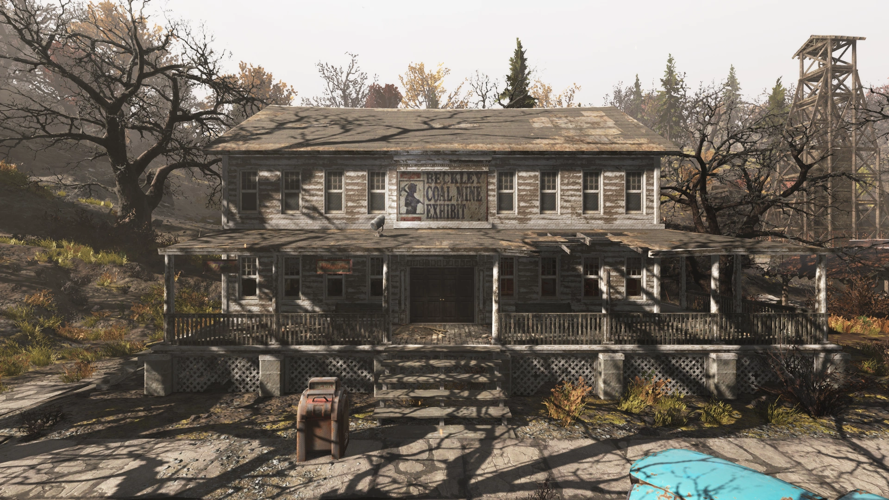
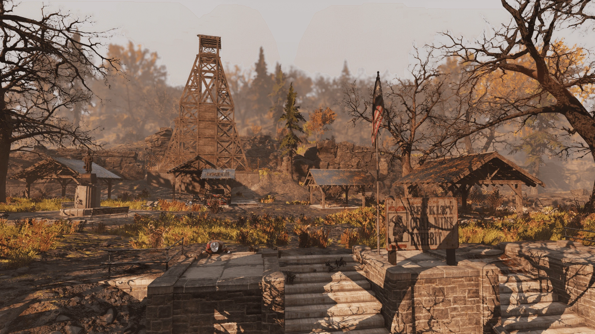
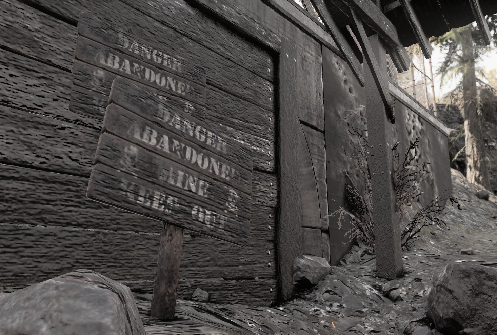
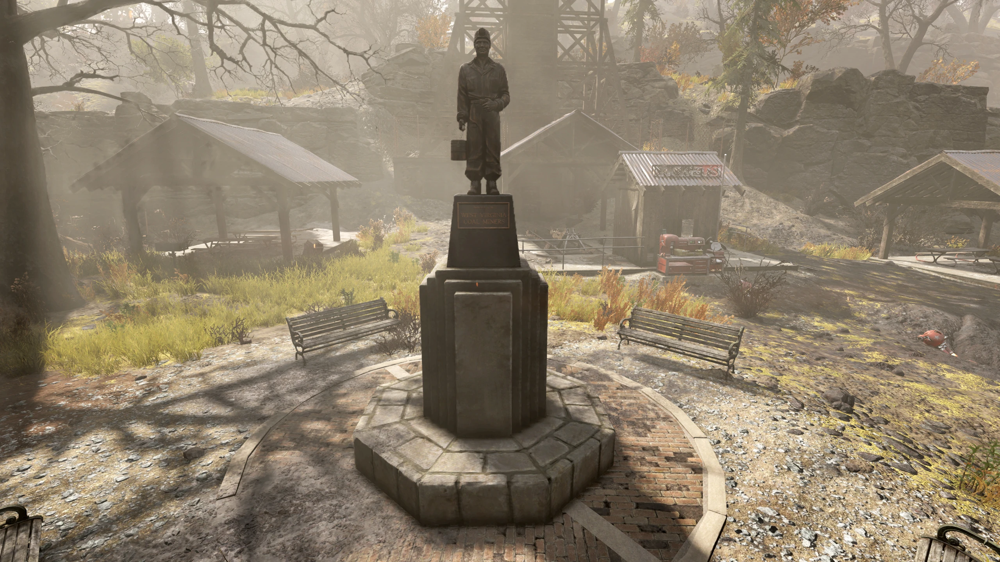
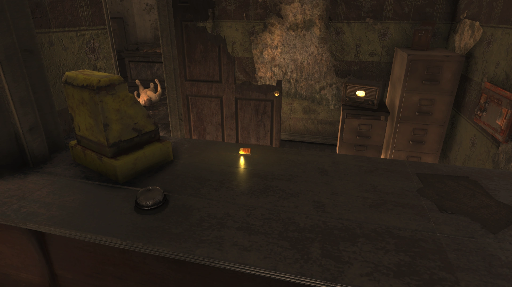
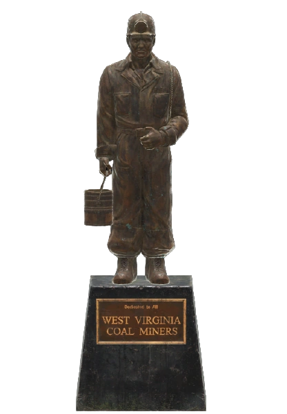

ベックリー鉱山展示場（Beckley Coal Mine Exhibit / Beckley mine exhibit）は、アパラチアの積灰の山地域の町、ベックリーにあるロケーションです。プレイヤーが確保、防衛、奪還のイベントを行えるパブリックワークショップでもあります。
概要
ベックリー鉱山展示場は、ベックリーの町の外れに保存されているモデル鉱山（観光用の模擬鉱山）であり、ここにはアパラチア各所にある炭鉱夫の記念碑の精巧なレプリカも設置されています。
レイアウト
ベックリー鉱山展示場は、金網フェンスで囲まれた高台の公園エリアです。ワークショップのエリアはほぼ正方形で、東は道路に、西は山の斜面に隣接しています。ここには3つのオイル、1つの金、1つのクリスタルの資源鉱床が存在し、資源抽出機を使って採掘することができます。また、6つの食料資源と8つの水資源も利用可能です。
敷地内には複数のパビリオン（あずまや）があり、北東には小さな木製の遊び場があります。この遊び場の中央には、キャップ箱がスポーンする可能性があります。公園の中央には、ベンチに囲まれた巨大な銅像（炭鉱夫の記念碑のレプリカ）がそびえ立っています。西側には塞がれた放棄された鉱山の入り口が見えます。入り口の上の丘には大きな木造の構造物がありますが、登ることはできません。
南東には展示場の案内所兼ギフトショップとして使われていた小さな博物館の廃墟がありますが、アクセスできるのは1階だけです。建物のカウンターの後ろの壁には、施錠された金庫（ピッキングスキル 2）があります。また、施錠された木製のドア（ピッキング 0）の奥には、いくつかのジャンク品が置かれた備品室があります。
このロケーションは通常、ロボブレインやプロテクトロンなどによって占拠されています。
主なアイテム（Notable loot）
- 世界の頂上の広告パケット（ホロテープ） - ギフトショップ内、レジ脇のフロントカウンターの上。
ホロテープとメモ
世界の頂上の広告パケット（Top of the World ad packet）
音声：毎日何千人もの新しいお客様に向けてビジネスを成長させ、リーチを広げる方法について考えたことはありませんか？プレザントバレー・スキーリゾートによるラジオマーケティングのエキサイティングな世界へようこそ！
私たちは世界の頂上から24時間365日放送を行っており、アパラチアの広大な山や谷にいる無数の地元住民や旅行者の耳に届けています。ぜひチャンネルを合わせて、私たちをチェックしてみてください。電話を手に取り、当社のマーケティングチームとのアポイントメントをお取りください。
あなたのビジネスが確実にブームになることを保証します！
開発の舞台裏
ベックリー鉱山展示場は、かつてPhillips-Sprague Mineとして知られていた、実在する「Beckley Exhibition Coal Mine」に基づいています。Fallout 76のリードアーティストであるネイサン・パーキーパイルは、ゲームのロケハンのためにウェストバージニア州を調査した際、この鉱山のツアーに参加し、「文字通り何百枚もの写真を撮った」と語っています。ゲーム内のロケーションにある看板も、現実のBeckley Exhibition Coal Mineの看板に基づいています。
積灰の山の煤煙に包まれた空気に似合う、少し物悲しい観光施設の跡地です。
ここはワークショップでありながら、中央の巨大な炭鉱夫像が静かな威厳を放っており、Fallout 76が持つ「過去の繁栄」をありありと感じさせてくれる素晴らしいロケーションだと思います。
貴重なオイルの資源抽出機がなんと3台も置けるため、大量のオイルを必要とするクラフターにとっては垂涎のワークショップですね。ただし、初期占拠しているのが硬い「ロボブレイン」だったり、防衛イベントのたびに山の斜面からモールマイナーがぞろぞろと降りてきたりと、手に入れるのも維持するのも一筋縄ではいきません。
ギフトショップ跡地で見つかる「世界の頂上」の陽気なラジオ広告が、かつてここが平和な観光地だったことを思い出させてくれて、少しノスタルジーな気分に浸れます。






ACCESSING USER COMMENTS_